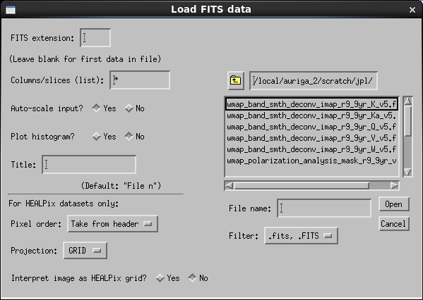
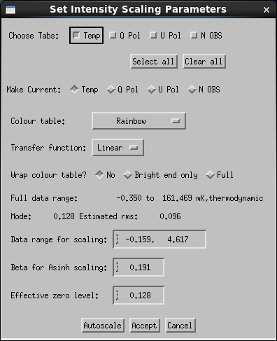
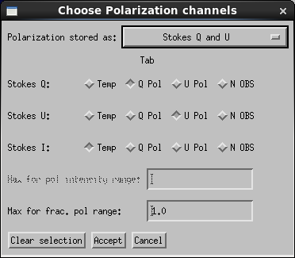

Menu Bar Options
This page describes all the options in the six pull-down menus on the ximview menu bar.
File

The Load FITS widget as it appears for the first image.
- Load FITS
- Launches a dialog box
that allows you to choose a FITS file, specifying
- FITS extension (=0 for Primary Header & Data Unit).
- Column list (for HEALPix binary tables) or list of slices (for N-dimensional cubes).
- Transfer (choose one of the available transfer functions).
- Whether to auto-scale the data (this affects the displayed colours but not the image values themselves). If you select this option you can choose to plot the histograms used to find the mode.
- A title for the dataset, used for the plot title and as part of the tab label if you are displaying multiple files. Default is "File n" for the nth dataset loaded.
- For HEALPix files you can also specify the pixel order (RING or NESTED) if you want to override the header. For the first file loaded you must specify the HEALPix projection (GRID, NPOLE or SPOLE). You can also tell Ximview to interpret a 2-D image as a HEALPix grid projection (the pixel grid must have the correct size), which allows seamless scrolling through 180 degrees longitude. These parameters are ignored for non-HEALPix data.
- Load image file
- Reads an image file in any of the formats
known to IDL, e.g. PNG, BMP, TIFF etc.
Note as with Load FITS, the image must
have the same size as any currently-loaded images.
Note the file chooser popup may take an appreciable time to appear, as it first checks that all the images in your current directory are in the correct format.
- New logfile
- Starts a new log file. The choices are to:
- overwrite the old log file
- make a file with a new sequence number, i.e. named "ximview_n.log" where n is a unique number
- Named...: you specify a filename via a pop-up box.
- Write PNG
- Dumps the currently-visible image area and, optionally, scale
bar to a PNG file. A pop-up requests the file name.
Note under DirectColor the output image will be greyscale.
- Reset
- Makes the image window sensitive to cursor motions and re-enables panning, in case either of these have been turned off accidentally.
- Exit
- Ends Ximview.
Options
- Mark Point
- Sets the action needed to mark a point. Choose from middle mouse button (default), right mouse button, or Shift-click (useful with a Mac mouse or touchpad).
- Zoom
- Sets the action needed to zoom in or out. Choose from Mouse wheel (default) or ctrl-click (for zoom in) and ctrl-shift-click (out). The latter is useful with a Mac mouse or touchpad). The zoom buttons on the main widget can always be used as well.
- Adjust Scaling
- Launches a dialog box that allows you to change all the
scaling options:
- Choose Tabs
- If there are multiple tabs, check the boxes for the tabs you want to adjust. You can also select or clear them all at once. Select all before you hit Accept will give identical scaling and colour for all tabs.
- Make current
- Check the box for one tab to set the input values (and values for info such as the full data range) to those currently set for this tab.
- Colour table
- Choose from the list. See below for comments on each table.
- Transfer Function
- Choose from the list of transfer functions.
- Wrap colour table?
- No
- image intensities outside the range set in Data range for scaling are displayed as the minimum or maximum colour.
- Full
- gives a cyclic mapping between image intensity and TV colour: pixels with intensities within the scaling range are unaffected, but pixels outside the range map to a (multiply) cycled colour instead of saturating.
- Bright end only
- as for Full but only for intensities above the maximum of the scaling range. (Recommended).
- Full data range
- For information. The units used here are adjusted to scale the image maximum intensity into the range [10, 10,000) units, e.g. if the peak on the map is 0.123 K it will be reported as 123. mK. Specify the range in the same units (mK in this case).
- Mode and Estimated rms
- For information. Same units as the data range. These values are only available if auto-scale has been run.
- Plot histogram on autoscale?
- If this box is checked before auto-scale is run, a histogram of the values around zero is shown with the derived mode marked (also the parabolic fit used to derive the mode). This allows you to check that the value is sensible.
- Data range for scaling
- Specify the image intensities that map to the faintest and brightest displayed colours (excluding wrapping). Use the units in which the full data range is quoted.
- Beta for Asinh scaling
- Sets the break between quasi-linear and quasi- logarithmic scaling (see transfer functions).
- Effective zero level
- Set to your best guess of the image intensity level corresponding to true zero. The reported values are not altered, but this is used by the Asinh scaling function, the red-black-blue colour scale, and the preserve colour option for RGB images.
- Autoscale
- Applies the auto-scale
algorithm to the "current"
image. The other tabs are automatically unselected as
a reminder that the values returned depend on the
particular image. The image is not scaled right away;
instead the suggested values of the data range, zero
level and β are filled in (along with the Full
data range, mode, and rms if not previously set).
Note: this may take a few seconds the first time it is run. It is quicker to auto-scale HEALPix maps on input.
The suggested values will be overwritten if you make another tab current, but can be recovered instantly by clicking Autoscale a second time.
- Accept
- Applies the chosen scaling parameters to the selected tabs.
- Cancel
- Don't change any scaling (but the full data range, mode, and rms are recorded if auto-scale has been run).
- Auto-scale all tabs
- Each image is auto-scaled. It just goes ahead and applies the scaling, there is no request for confirmation.
- Colour table
- Select your prefered colour table:
- Rainbow
- Default on startup. Garish but gives good discrimination between levels.
- Heat
- Black-red-orange-white. Rather low contrast
- Blue-yellow-white
- Supposed to be a "colour-blind friendly" scale in that it should look the same to the 5-10% of the male population with red-green colour-blindness.
- Greyscale
- Actually gives better contrast than "Heat", especially at low intensities.
- Red-black-blue
- Designed for images where the signal may have either sign, e.g. Stokes parameters Q, U, and V, velocity maps, or CMB maps. The intensity that maps to the zero level is set to black, negative intensities are coded red to white, and positive intensities are coded blue to white. The scaling to white is the same on both sides, so if the range is lopsided, e.g. −1 to 10, only one side will reach white.
- Cyclic
- Constant saturation and intensity and hue cycling through 360°. Suitable for displaying phase or polarization angle.
- Grid
- Controls plotting of coordinate grids. One option toggles the plotting on or off, the other allows you to set a particular grid interval for each coordinate. The automatic algorithm tries to get 3 to 5 grid lines in view at any one time, so the grid interval will re-set when the zoom is changed, but this is suspended when the interval is explicitly set. To restore automatic intervals, set the values to -1. If the FITS header does not conform to the WCS convention, a linear conversion from pixel to world coordinates is assumed. If there is no header information the grid is in pixels.
- Set view centre
- Enter the position for the view centre in one of the
following systems:
- image pixels (x and y pixel coordinates)
- HEALPix pixel number in either RING or NESTED order.
- Longitude and latitude, either in degrees (in the sky coordinate system of the image), or in hexadecimal, in which case longitude is taken as being in hours unless explictly specified in degrees. For Hexadecimal numbers, seconds are optional but if given must be present for both coordinates. Thus the following are equivalent:
19 59 28.35 40 44 02.1 19:59:28.35 40:44:02.1 19h59m28.35s 40d44'02.1" 299d52'05.25" 40d44'02.1
- Restore default screen size
- Returns the Ximview window to its initial size (512 × 512 pixel image window).
- Blink Setup
- Launches a dialog box with a checkbox matrix allowing you to
specify which tab appears at which point in the sequence.
The matrix can be cleared with the Clear sequence button.
You can also specific the blink period (per tab, not total) in seconds, and choose to omit the scale bar, which can be distracting if it differs between images.
Click the Done button to start blinking immediately. Otherwise click Cancel.
- Red-Green-Blue
- Launches a dialog box with a checkbox matrix allowing you to
assign any images already loaded to the red, green and blue
channels of a new image (a new tab is created for it). Two
colour scaling options are available:
- Saturate to white
- objects that are saturated (ie displaying the maximum colour value) in all three channels will display as white. In this case the intensity scaling for each channel is unchanged when the RGB image is created. If the scaling of any channel is changed on the original tab, the RGB image will change to match, but only when the underlying pixmap is updated, e.g. on a change of zoom or significant panning. In the latter case the RGB image may be updated in some regions but not others, leading to odd-looking results.
- Preserve colour for saturated pixels
- uses the SDSS algorithm of Lupton et al. (2004), see Preserve colour.
- Polarization
- Options for displaying polarization
information based on images already loaded.
At present there is only one option:
- Colour
- Makes a new tab. A dialog box allows
you to select two channels representing one pair of
- Stokes parameters Q and U
- Polarized intensity and angle
- Fractional polarization and angle.
For two channels you get a Hue-Value (HV) image where hue (colour) represents polarization angle and value (brightness) represents polarized intensity (or fractional polarization for option 3).
For three channels you get a hue-saturation-value (HSV) plot where hue is angle, saturation is fractional polarization and value is Stokes I. Saturation is a linear scaling of fractional polarization from zero to a maximum you set in the dialog box.
For both HV and HSV the channel mapped to "value" uses the same scaling as already set on its original tab, if available. For option (1) HV plots, the value (pol intensity) is calculated on the fly and you get linear scaling from zero to a maximum set in the dialog box.
- Delete tab
-
- Delete current tab
- does just that, right away.
- Specify
- select from a list (includes a cancel option).
- Imstats
-
- Box
- Select to use a square or rectangular box around the marked point to define the region for statistical analysis (Default).
- Region of interest
- Select the region to analyse using the IDL CW_DEFROI routine: options of polygon, point, rectangle and circle. Several such regions can be defined before finishing; the union of all will be used. Note the position readout on the CW_DEFROI window is meaningless (but the readout on the Ximview window works as usual).
- Set box size
- in pixels. Enter one number for a square box, two for a rectangle. Default is a square box with area about 121 beam areas, or 33 × 33 pixels if no beam is defined in the fits header.
- Set threshold
- Sets the threshold image value for integrating the area/solid angle of extended sources. Enter the value in the units specified in the prompt, which may not be the original units of the image (e.g. if the image units are Jy but most image pixels are at the mJy level, the units will probably be mJy). If set, Imstats reports the number of pixels within the box or ROI with image values above the threshold, and the corresponding solid angle if there is suitable astrometry information in the FITS header. To unset, enter NaN.
- Peakfit
-
- Find extremum
- Default. Finds the largest maximum or minimum in the search box.
- Find maximum
- Does that, ignores minima.
- Find minimum
- Does that, ignores maxima.
- Set box size
- Enter size of square box in pixels.
- Profile Options
- Pop-up box allows you to set several options for Profile:
- Choose between great circle path (available only if WCS is set) or a linear path in pixel space.
- Plot profile between the last two marked points or between the last marked point and a new point. If the latter, the potential profile path is plotted continuously as you move the cursor. The profile itself is not plotted until the final point is marked.
- Distance to extend the profile at each end. This is useful if you want to plot a profile running through a pair of peaks: mark a point near each peak and centre it on the peak using maxfit, then specify an extension of a few beam widths so that the profile shows the full rise and fall on each peak.
- Clear marks -> Last
- Unsets the last marked point; the current mark is restored to the last-but one point (if set) and the last-but-one point is restored to the last-but-two (if set).
- Clear marks -> All
- Unsets the current marked points and removes the graphics markers.
- Set image properties
A dialog box allows you to select a tab and inspect and change the values of: polarization, frequency, beam (point spread function) parameters, noise type and brightness unit. For polarization you can choose from a list of possible polarization products. This list is inherited from AIPS and includes some items that are not really polarization, such as spectral index and optical depth. For frequency you can choose from the list of frequencies already loaded, or enter a new value. The value is a text string, e.g. "K band" "408 MHz" etc. The beam parameters assume a Gaussian shape and are the FWHM major axis (BMAJ), FWHM minor axis (BMIN), and position angle (BPA). The noise type options are "independent in each pixel" (e.g. for CCD images), "correlated over the beam" (e.g. for aperture synthesis images), or "unknown".
The frequency and polarization are used for labelling tabs, and the polarization also sets the default channel assignment for polarization displays. The beam parameters and noise type are used by Imstats to calculate integrated flux densities and errors. Note that the noise type must be explicitly set to allow Imstats to estimate errors in integrated flux densities, as this parameter is not stored in FITS headers.
- Set coordinate system
A dialog box allows you to assert that the coordinate system is one of the options known to HEALPix, e.g. Equatorial (RA/Dec), Galactic, Ecliptic, etc. This is primarily intended for HEALPix images in which the COORDSYS parameter is not supplied in the FITS header. It affects the format of the position readouts on the image and profile windows and the labelling of coordinate grid lines.
- Catalogue
- On/Off
- Toggle plotting of any catalogues already loaded.
- Load new catalogue
- Pops up a box requesting the file name for a catalogue to plot. The file should be a FITS file with the catalogue stored as an extension. The only items in the catalogue used are the positions and primary identifiers. If the file includes Virtual Observatory UCDs (e.g. files from VizierR), the main position and identifier columns are used. Otherwise there must be columns labelled "RA", "Dec" and "Name". Positions are automatically converted into the coordinate system being displayed. You are also prompted to choose a symbol to be used for this catalogue, and whether or not to plot identifier labels. Multiple catalogues may be plotted at once. Catalogues already held in IDL memory can be plotted using ximcat.
- Process catalogue
- UNDER DEVELOPMENT - currently does not work, see programming with Ximview.
- Ruler
- Prints the distance between two points, and also the angle of the line on the plot. If the WCS projection is set, the distance is the great-circle distance and the angle is the position angle, PA (anticlockwise from north), otherwise the linear distance, and the angle anticlockwise from the y axis. If the axes are not defined or have different units, the distance is in pixels and an angle is not reported.
- Use marked points
- Gives the distance between the last two marked points.
- Interactive
- UNDER DEVELOPMENT- currently does not work. Aim is to give the distance from the last marked point to a new point. The path between the points is plotted until the new point is marked.
- Protractor
- Prints the angle between the last three marked points, and plots a angle marker. Defining the latest point, as A, the second-last point as B, and the last point as C, the angle is PA(B to A) - PA(B to C).TBC!!
- Help
- Displays this help in various formats depending on the version of IDL in use. You get plain text in IDL versions before 6.2, HTML help on your browser for version 8, and the IDL Help Assistant in between.
- Release Notes
- Displays list of changes for each version of Ximview.
- About
- Displays Ximview credits.
Display

The Adjust Scaling widget as it appears after autoscale has been run.
Tabs

The Polarization widget
Analysis
Headers
This menu consists of a list of the datasets read in to ximview in the current session, labelled by the title parameter given when loading (or "File 1" etc), the file name (or "Online Data" if read from the command line), and the FITS extension number if relevant. Clicking on any item launches a pop-up with its FITS header.
For data stored in FITS extensions, including HEALPix, the stored header is modified by including any lines from the primary header that are not duplicated in the extension. For HEALPix files, the stored header includes the axis descriptors (CTYPE1 etc) of the gridded image, but also the column labels (TTYPE1 etc) of the original binary table.
For datasets lacking headers such as on-line arrays or PNG files, ximview creates a basic header internally. For TIFF files, the full TIFF header is stored in the FITS header comments.
Any changes made by "Set image properties" and "Set coordinate system" are not reflected in the displayed headers.
Help
J. P. Leahy
Jodrell Bank Centre for Astrophysics
j.p.leahy@manchester.ac.uk